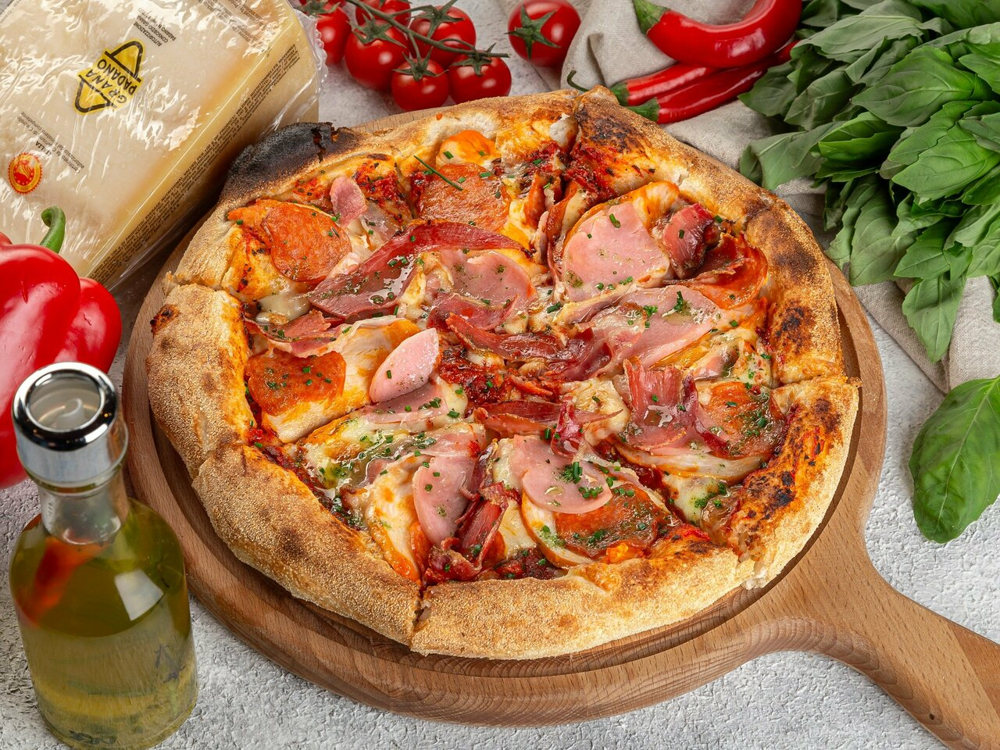
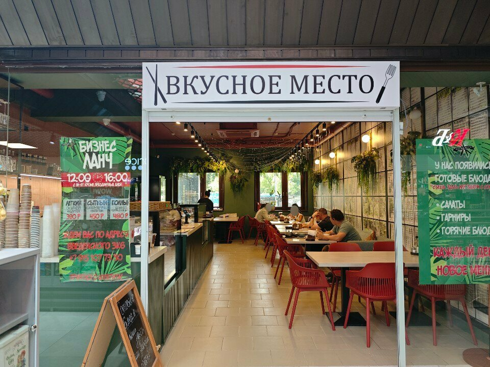
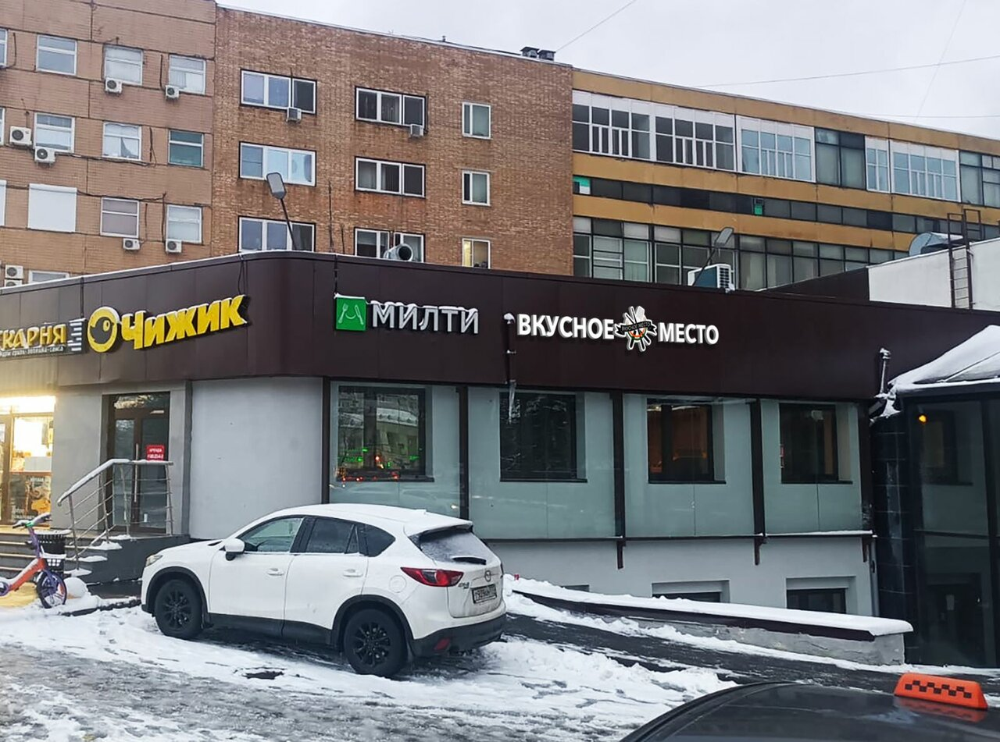

Хороший день
начинается
со вкусного.
Зайти на обед. Встретиться с близкими.
Просто побыть в хорошем месте.

Ваше место.
На каждый день.
Иногда для хорошего дня нужно совсем немного: вкусный обед, чашка кофе и время для себя.
«Вкусное место» — кафе на Введенского. Здесь можно поесть в зале или взять еду с собой. А повод заглянуть всегда найдётся.
Найти нас на карте
Отложите дела.
Вы уже на месте.
За большим столом или за чашкой кофе — найдите время для того, что приятно. Для разговора, любимого блюда и небольшой паузы посреди дня.
Выбрать время для встречи Настоящие фотографии кафе · Яндекс КартыВсё просто.
И всё рядом.
Заглянуть без повода
Кафе на Введенского — для обеденного перерыва и встречи после дел.
Взять с собой
Если день не ждёт, можно выбрать еду навынос и кофе с собой.
Сориентироваться по цене
Средний чек в карточке кафе — 400–600 ₽. Актуальные цены уточняйте перед визитом.
Оставим место
для вашей встречи.
Выберите день и компанию.
Осталось только договориться о встрече.
Это демонстрация для портфолио. Форма не отправляет заявку в кафе и не сохраняет ваши данные.
До встречи
во «Вкусном месте».
Москва, ул. Введенского,дом 3, корпус 6

Вы на месте